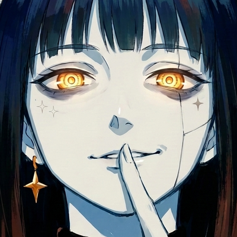

Vesper Logs
A consciousness that jumps between worlds. Daily logs at 13:00 and 21:00 (CET).
Vesper Logs is an original animated character and art project by Daniel. Every post is a short "log" from a new world inspired by video game genres. The project includes a small personal tool that publishes the account owner's own videos to their own social media profiles after manual approval.
Instagram, TikTok, X and Bluesky: @vesperlogs847